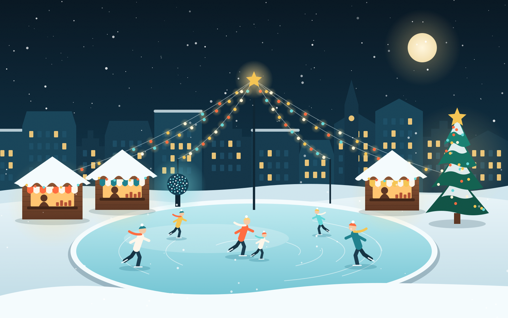

Van 27 november tot 3 januari staat Winterpret Blankenberge op het Koning Leopold III-plein. Dat is het plein waar Seafox aan ligt.
Een piste van ongeveer 650 m², overdekt, dus ook bij regen kun je schaatsen. Schaatsen huur je ter plaatse.
Kerstchalets met lekkers en cadeautjes, een glühweintoren en een reuzegrote ledbol als blikvanger.
Opwarmen met iets warms, met zicht op de schaatsers. In het weekend zijn er optredens.
Seafox ligt aan het plein zelf. Je trekt je jas aan, neemt de lift naar beneden en je staat tussen de kerstchalets. Na het schaatsen sta je zo weer binnen in de warmte.
Een greep uit wat er op het plein gebeurt. Het volledige programma vind je bij Toerisme Blankenberge.
Volledig programmaDe vrije nachten tijdens Winterpret, rechtstreeks uit onze agenda. Klik op een periode om ze aan te vragen.
In de winter heb je het strand bijna voor jezelf. Wandel tot aan de pier en warm daarna op in een van de zaken op de dijk.
Sea Life en het Belle Epoque Centrum zijn leuke uitstappen als het buiten te guur is. Meer in de omgeving
De trein naar Brugge vertrekt beneden in het gebouw. Ook daar is het in de kerstperiode extra sfeervol.